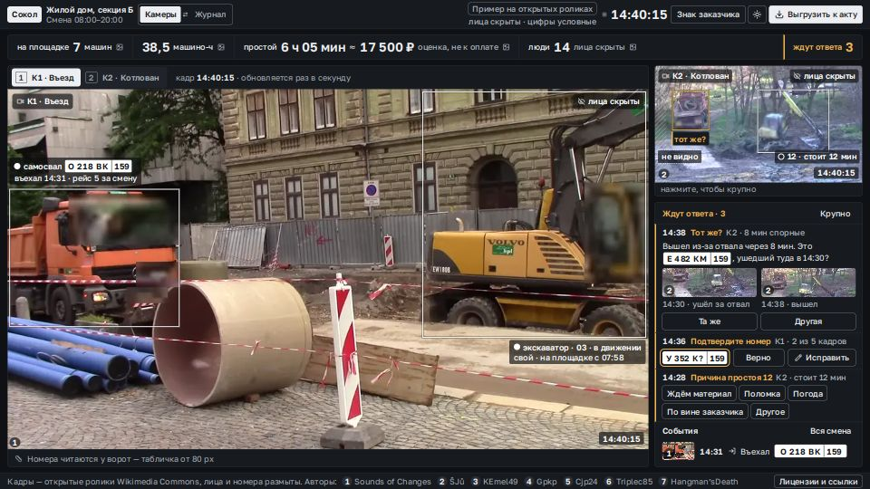
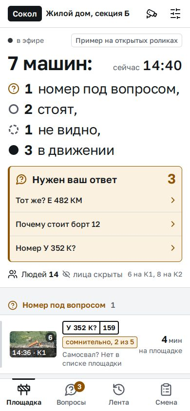
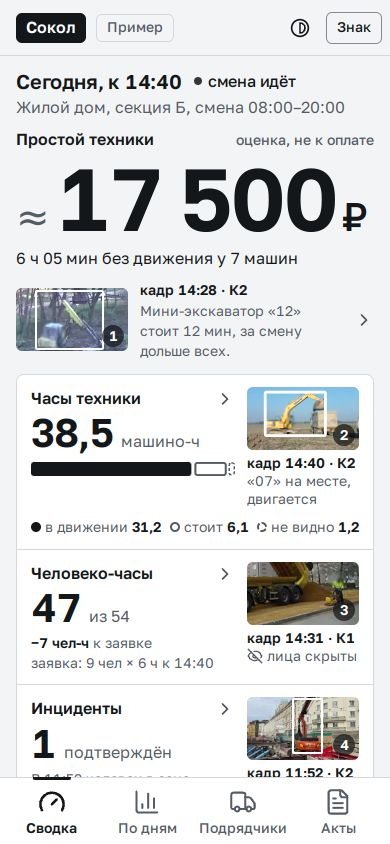

«Сокол» — три экрана
прототип v3 · 21.10.2026 · вид без логикиОдна смена одной площадки на трёх экранах: большой экран на показе, телефон прораба, телефон руководителя. Цифры здесь — пример. Кадры взяты из открытых роликов Wikimedia Commons, лица и номера на них размыты.

Для зала на показе · экран 1920×1080
Большой экран показа
- «Камеры»: видео крупно, рамки и номера на кадре
- Справа — что ждёт ответа и события смены
- «Журнал» одной кнопкой: цифры с кадрами, площадка в 3D, рапорт к акту
Открыть во весь экран

Для прораба · телефон
Что сейчас на площадке
- Кто стоит, кто в движении, кто уехал
- «Та же машина?» — ответ одним касанием
- Причина простоя — одним касанием
Открыть

Для руководителя · телефон
Смена в четырёх числах
- Часы техники, простой в рублях, человеко-часы, инциденты
- Неделя по дням
- Видео — только по касанию, выгрузка в акт
Открыть
Как смотретьБольшой экран — на компьютере во весь экран (F11). Клавиши: J — «Журнал», 1 и 2 — камеры, T — тема. Телефоны лучше открывать с телефона.
Настройки в адресе?theme=light или ?theme=dark — тема, ?brand=client — знак и цвет заказчика (меняется одной настройкой).
КадрыНомер автора стоит на каждом кадре, список авторов, лицензий и ссылок — внизу страницы (на большом экране — кнопка «Лицензии и ссылки»). Люди всегда размыты, на кадрах стоит метка «лица скрыты».